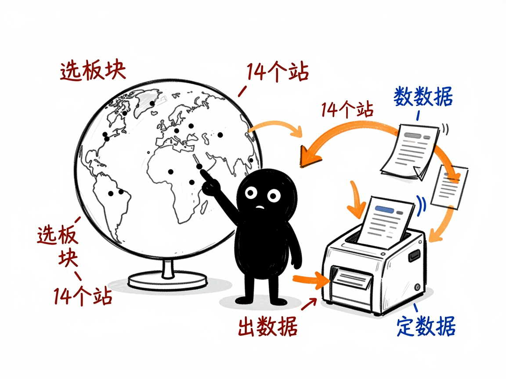

想用 Sorftime 挖亚马逊数据，又不想一页页手抄？它一个入口抓 11 类 —— sorftime-rpa 介绍
你用 Sorftime（sorftime.com）做亚马逊卖家分析，它家榜单很多：畅销榜、产品选品、关键词、品牌、卖家，还有各种"反查"工具。手动在网页上点、复制、粘贴，光一个类目就能耗掉一下午。sorftime-rpa 把原来 11 个分散的技能合并成了一个入口，一条命令抓数据，一条命令出报告，覆盖选品和"查竞品/品牌/市场/关键词"两大块。
sorftime-rpa 就是来解决这件事的。
你给它一个板块名加站点（比如"美国站、查品牌 Anker"），它还你一份 CSV 数据表，以及一份分析报告。

它到底能做什么
选品模块（看榜单、找方向）：
- 畅销榜（bestseller）：每个类目 TOP100 商品。
- 产品选品（product）：各站热销 ASIN。
- 关键词（keyword）：各站热门搜索词及趋势。
- 选品牌（brand）/ 选卖家（seller）：各站品牌榜、卖家榜。
- 选市场（market）：细分市场的规模、新品占比、均价等。
查模块（按条件反查）：
- 查 ASIN（checkproduct）：批量查商品详情，如价格、销量、评价、排名。
- 查品牌（checkbrand）/ 查卖家（checkseller）/ 查市场（checkmarket）：按关键词跨站反查。
- 查关键词（checkkeyword，实验性）：看流量来源、搜索趋势等。
它还支持 14 个亚马逊站点（美国、日本、英国、德国等），并能把 CSV 自动生成中文 Markdown 报告。
一个具体例子
在技能 scripts 目录下运行，统一用 --section 选板块：
# 抓品牌榜（美国 + 日本）
python sorftime_rpa.py scrape --section brand --station US,JP --out data/brands.csv
# 查一个品牌在各站的情况
python sorftime_rpa.py scrape --section checkbrand --station US --mode brand --queries Anker --out data/anker.csv
# 批量查几个 ASIN
python sorftime_rpa.py scrape --section checkproduct --station US --queries B0CHX1W1XY,B0BDHZ8Q63 --out data/asins.csv
# 把 CSV 变成报告
python sorftime_rpa.py analyze --section brand --input data/brands.csv --out-md reports/brand.md
--station 可跟多个站点，--queries 是你要查的词或编号。

谁适合用
- 用 Sorftime 做亚马逊选品、竞品监控的卖家和运营。
- 需要跨 14 个站点批量拉品牌、卖家、市场数据的研究人员。
- 想把这些手工活变成可复用脚本、定期跑的人。
一点说明
它不是双击即用的软件，而是给 AI 助手用的"技能包"加 Python 脚本，靠 BrowserSkill 驱动你已登录 Sorftime 的真实浏览器去读数据（Sorftime 接口全程加密，所以只能"看"页面解密后的内容，不用配密钥）。因此要先装好 BrowserSkill、登录 Sorftime，并确认 bsk status 已连接。免费会员部分数据会被遮蔽，属于平台限制。查关键词模块标注为实验性，可能不稳定。具体板块和字段以项目 SKILL.md / references 为准。